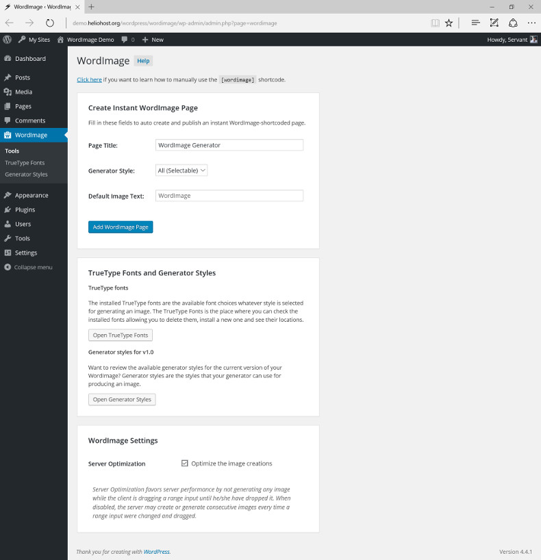
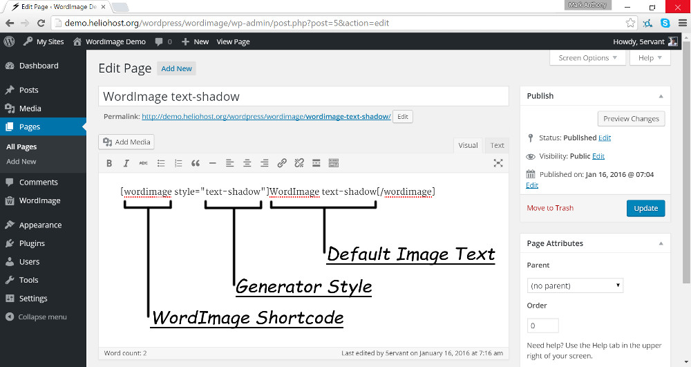
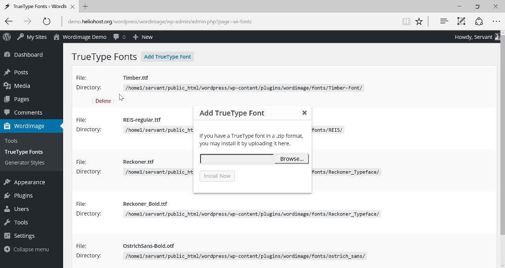

A premium WordPress plugin that will allow you to use or to instantly attach the customizable [wordimage] shortcode into your post/page for embedding a WordImage generator. |
Updated: Jan. 2015
By: Mark Anthony B. Dungo
Email: 5ervant@protonmail.com
If you have any questions that are beyond the scope of this help file, please feel free to email via my user page contact form here.
If you already purchased and downloaded the WordImage plugin in a .zip format, you may now follow these instructions for installation:
After activating, you can now see the "WordImage" menu in your "Dashboard".
As you can see on the previous image, you can use the form named "Create Instant WordImage Page" on the 'WordImage Tools' to create an instant shortcoded page, that you can edit later. Here's the quick view of that tool's fields:
| Field Name | Description |
|---|---|
| Page Title | The title of the page that you're going to create. |
| Generator Style | The generator style that you want to use for your WordImage generator. Choose "All (Selectable)" for a style selection's field on your generator. |
| Default Image Text | The default text that's initially inputted in the text field(s) of your generator. |
The screenshot of a WordImage generator. Some designs of the generator's fields will vary depend on your theme's design.
You can manually use the WordImage shortcode on your page's content where you want a WordImage generator to appear, i.e.:
[wordimage style="text-shadow"]Default Image Text[/wordimage]
The above shortcode example consists of 3 parts:
[wordimage] shortcode tag for embedding a WordImage generator.text-shadow style that'll going to use for your generator.For example, you'll going to use "all" the generator styles, you can either use this shortcode:
[wordimage style="all"]WordImage[/wordimage]
Or neglect the style attribute as the generator style "all" is assigned by default, such this one:
[wordimage]WordImage[/wordimage]
Or you can use this shortcode in the image if you want to use the "text-shadow" generator style:
The available styles that you can use are listed in the Generator Styles section.
To maximize the uniqueness of your WordImage generator, you can delete all the pre-installed fonts and install your desired fonts.
To upload your own TrueType font file:
To delete an installed TrueType font file:
Here's the list of the styles that you can use for your WordImage generator:
| Name | Description | Version Added |
|---|---|---|
| all | By using this style, the generator will includes a drop-down list for allowing the users to choose what generator style do they want to use and allowing them to preview the styles one by one. Use style="all" or neglect the style attribute to use all the generator styles. |
v1.0 |
| text-shadow | Convert a text with a shadow, into an image. | v1.0 |
| two-text | Convert a two-text, into a single image. | v1.0 |
Developer's Note:
Go to WordImage -> Generator Styles and check the style location's components if you want to edit their style functionalities.
I've pre-installed the following TrueType font files as listed.
All of the listed fonts above are free for personal/commercial use. Just message me if you have a problem about them.
As I said at the beginning, I'd be glad to help you if you have any questions relating to this item. No guarantees, but I'll do my best to assist. If you have a more general question relating to the items on CodeCanyon, you might consider visiting the forums and asking your question in the "Item Discussion" section.
5ervant (Mark Anthony Dungo)